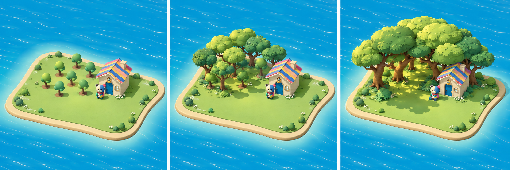
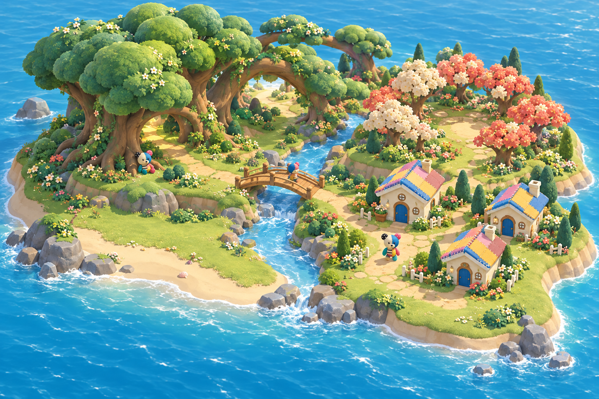
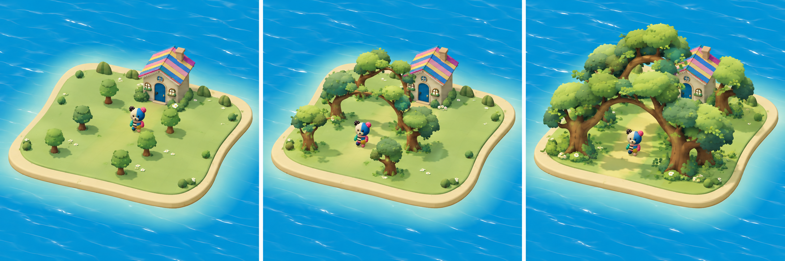
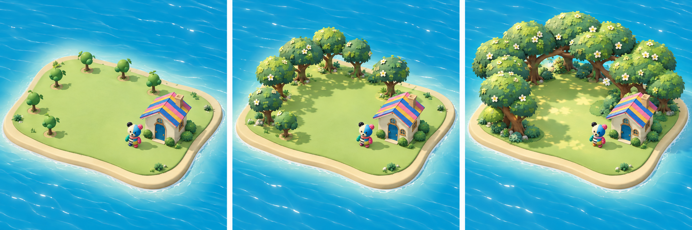

PG-A / 成長する場所
大きな樹冠の庭
塊に植えた木が大きな樹冠を共有し、木陰の部屋になる。

現在の主比較：島全体の3方向×3段階へ → このページは以前の木の局所造形と全体の仮絵です。
ART BEFORE IMPLEMENTATION
小物が増える島から、つながりが大きな場所になる島へ。
島全体の完成予想1枚と、木の配置による3方向・各3段階。気に入った完成景を先に選び、実3Dも同じ画角で照合する。
PG-W / 全体像を相談する仮案

将来の水・地形・複数地区を含む全体予想。3方向から勝手に採用案を決めた画像ではない。上の樹冠の余白、スマホでの密度、住人と家の細部は次の固定版で調整する。
SAME CAMERA / 配置から育つ形を比較
最初の状態にも、育った状態にも、魅力があるか。
目標は同じ8本・同じ家・同じ画角。生成結果の本数や位置は厳密には揃っていないので、数量や保存の挙動を示す仕様図として扱わない。
PG-A / 成長する場所
塊に植えた木が大きな樹冠を共有し、木陰の部屋になる。

PG-B / 成長する場所
列に植えた木の枝がつながり、くぐって歩ける森の道になる。

PG-C / 成長する場所
木々がつながって広場を囲み、空が見える居場所になる。

KEEP / 変えない基準


生成美術の住人は色と印象の参考に限る。細部が既存モデルと一致したという承認を付けない。
SILHOUETTE / 小さくしたときの形
形の見分けを作者が観察するための縮小表示。独立した理解テストではない。
このページは生成美術の比較資料。実アプリの変更・公開はしていない。選定、無説明理解、runtime検証は未実施。
制作記録 · 3方向のプロンプト · 全体像のプロンプト